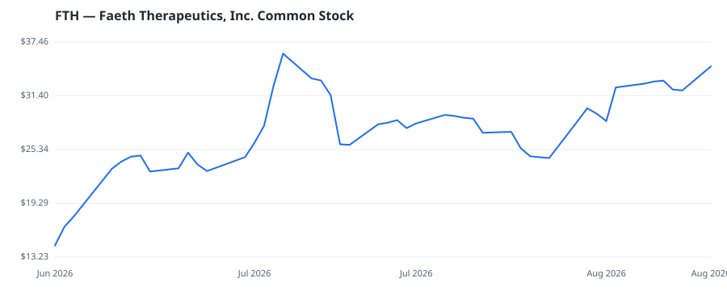

bullish · bearish · n/a — dots: price>SMA10 · SMA10>SMA50 · SMA50>SMA200 · up>down volume (20d)
Pharmaceuticals & Biotech · small cap

Faeth Therapeutics Inc is a clinical-stage biotechnology company focused on improving outcomes for cancer patients through multi-node inhibition of critical oncogenic pathways. The company's principal program is PIKTOR, an investigational all-oral combination of serabelisib and sapanisertib in development for endometrial and breast cancer. PHARMACEUTICAL PREPARATIONS · website
🛒 Newly buying: Fairmount Funds Management LLC (+149%, 1.2% of book)
| Fund | Fund alpha vs SPY | Position | % of book |
|---|---|---|---|
| Fairmount Funds Management LLC | +149% | $18M | 1.2% |
| Caligan Partners LP | +254% | $16M | 0.8% |
Hedge data: SEC EDGAR 13F · ranked funds beat SPY in >50% of their quarters · fund alpha = mirror-portfolio return minus SPY.